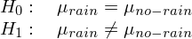

Analyzing the NYC Subway Dataset
This project has been developed in order to pursue the Data Analyst Nanodegree offered by Udacity. Specifically, the project aims to use the knowledges acquired in the first course of this Nanodegree: Intro to Data Science.
The Short Questions answers about the data analysis can be found here.
1 Introduction
The aim of this project is to evaluate whether or not more people ride the subway in New York City when it is raining than when it is not raining, that is, if there is a significant difference between the riderships on rainy days and non-rainy days. To reach this goal, we are going to analyze the NYC Subway data set provided by Udacity (also available here). This data set corresponds to the month of May 2011 and can be accessed through the main source in the web page of the MTA, in the Developer Resources section.
2 Statistical Test
2.1 Analyzing the data
The given data comes in a csv format, consisting of a numerical index (integer) and a series of columns representing different measurements of the MTA system. These columns and their associated values are described here.
The variable that we are analyzing is ENTRIESn_hourly which is not a measure of the entries per hour, instead it measures the number of entries between readings. That gap of time could be 4, 8, 12, 16 or even 20 hours. However, the majority of measures have been made with a gap of time of 4 hours (96%), then with a gap of 8 hours (3,7%) and so on. You can reach more info on the corresponding Notebook.
We want to analyze wether or not the entries varies depending on if it is raining or not. We can plot the distribution of the entries per hour, differentiating for both situations:

In that image we can see that both distributions are very similar, where the main difference came across values below 1.000 entries. Note that the image has been truncated to show only values of entries below 10.000. It also seems that exists some problems while plotting the legend with ggplot. In addition to that figure, we can take a look at some statistic parameters of both distributions:
| Rain | No Rain | |
|---|---|---|
| Count | 9585 | 33064 |
| Mean | 2028.20 | 1845.54 |
| std | 3189.43 | 2878.77 |
| min | 0 | 0 |
| 25% | 295 | 269 |
| 50% | 939 | 893 |
| 75% | 2424 | 2197 |
| max | 32289 | 32814 |
This data we are analyzing corresponds to the aggregate data (from all remote units). As we can see in the table below, there is a difference in the mean on both populations, so is our task to determine if they are significantly different. Regarding the previous figure, we could conclude that the red curve corresponds to data when it is not raining whereas the blue curve correspond with data collected when it is raining. Note that this rain/no-rain tag that we have added to our data corresponds to when it had been raining within a day, so it could be possible that some data points are tagged with a rain when it was not raining at that specific moment in time (but it rained on that day).
2.2 Statistical significance
If we want to know if there is a significant difference between the two distributions, that is, if people use the train more often when it is raining than when it is not, we need to make a hypothesis testing with a Mann-Whitney U test. This kind of test will allow us to determine whether or not there is a significance difference between the two populations, which is the same as saying that the means are different. In this case we can’t conduct a t-test cause the distributions are not normal, so we use a non-parametric test like Mann-Whitney U test. With this premise in mind we can construct our null and alternative hypothesis to evaluate:

Therefore, our test will be directional (one-tailed), since we want to prove what our intuition tell us, that when it is raining more people will take the subway. Also we will select a significance level of alpha = 0.01 instead of a higher value like 0.05 because the one-tailed test is less conservative (we are more likely to reject the null when it is true).
Given these parameters, we conduct the Mann-Whitney U test and we get a p-value = 2.74e-6, which is clearly lower than the critical value, so we would reject the null hypothesis. That means that more people ride the subway in New York City when it is raining than it is not raining (in other words, it is not likely due to chance to get this difference between the two data).
NOTE: The associated IPython notebook could be found here. Here we can also see that if we split the data differentiating between different stations and we conduct the statistical test for each of them, we will not reject the null for each of the station, indeed, we would only say that in three of the stations significantly more people ride the subway when it is raining.
3 Linear Regression
In order to get predictions about how many people will ride the subway depending on weather conditions and time we will build a regression model. That regression model will be based on the given data explained above, using the characteristics that best lead to a good predicted values.
In all analysis that I have made there is always a huge dispersion in data caused by the difference between stations. We have stations with an average ridership much higher than the rest so our model should not include all the data for making a predicting model. Another option we have is to create dummy variables for different stations, so that our regression would calculate a higher theta value for those stations with more people riding the subway.
3.1 Aggregated-data regression model
3.1.1 Algorithm
In order to compute the regression model (theta coefficients) for the aggregated data (without differentiating between stations) the chosen method is OLS. However, Gradient Descent has also been used for comparing purposes.
The reason of choosing OLS as the main method is that it gives a close solution of the minimum of the cost function, whereas Gradient Descent solution is not as accurate and could give us a local minimum (not the global one). In this case the amount of data is not a problem for OLS, so we do not need the inherit speed of Gradient Descent in this case.
3.1.2 Variables
The included variables as one-order terms into the regression model are the following: hour, day_week, weekday, fog, precipi, pressurei, rain, tempi and wspdi. Other high-grade terms have been also included to the regression model (from order 2 up to order 10 depending on the specific characteristic and the results that it provides in the final model). This high-order terms include the variables: hour, precipi, DAYn, day_week, pressurei, tempi and wspdi (where DAYn is the day of the month).
Some dummy variables have been also included, separating data points with different values of UNIT and conds.
In a first approach, the variables that intuitively have a direct relation with the number of people that ride the subways have been chosen, such as the weather variables (the worst the weather, the more people will ride the subway) and other time constraints variables (there has to be peak hours and there could be a difference between weekday and non-weekday days).
Based on this intuition, an analysis of the influence of the different variables on a regression model and its Coefficient of Determination could be made to visualize those relationships, getting a more specific vision about how each variable influences the number of entries, so that it could be advantageous adding dummy variables or high-order terms in the regression model (for variables that clearly does not follow a linear curve).
In the case of the dummy variables, there is a high difference between the passengers for different stations, which produces a high dispersion in the scatter plot if we do not desegregate this data for different stations (or units). The reason to add another dummy variable for conds is based on the analysis of the R2 value obtained (which is better with the variable that without it).
There are three different Notebooks that have been used for the variable analysis, which can be reached here, here and here.
3.1.3 Regression Model
The result of applying OLS is a Coefficient of Determination parameter of 0.5028. This R2 values says that 50,28 % of variability of the ENTRIESn_hourly parameter could be determined with the different variables that has been used in the regression model (weather and time).
To quantify if this model could be appropriate for predicting the ridership we should take a look at both variables for entries, the actual and the predicted. In the following image we could see a scatter plot with the OLS result (blue) and another with the Gradient Descent result (red). There is also a LOESS curve and a LS curve (with a lighter color). A black line is also added with the reference 1:1 line that the data should follow.

So given the R2 parameters we could say that is a good estimation, whereas if we take a look to the above curve, the predictions are not very close to the reference line for higher values of ENTRIESn_hourly, the regression model has made a good adjustment for lower values (where most of them are concentrated as well).
3.2 Regression model for each station
There is a high difference between riderships for different stations. This difference could be appreciated in the scatter plot of the entries per reading where we have a high number of dispersion and also a huge amount of outliers. The quickest way to visualize this is plotting the entries on each station:

In the above figure we can see the mean (red) and median (blue) values for the different stations. As we can see, this huge difference between stations will create a regression model with the aggregated data that may not be as precise and accurate as it could be if we split the data for the different stations and create a model for each one of them.
In order to support this theory of the station-splitting-analysis in someway, different stations have been analyzed and a regression model has been created for each of them individually. The result could be viewed in the following image:

In this case we have the 4 stations with higher mean entries (for making the comparison easier). The Coefficient of Determination has been also included in the tittle of each of them. The presented curves correspond to the desired value (black), the LOESS curve (red) and the LS curve (pink) with the 95% confidence interval. In this case the regression model created is much more accurate than before, reaching a R2 value of 0.8948 for the 59 ST-COLUMBUS station, which means that the 89,48% of the variability in the entries for this station could be explained by external variables like the weather and the time.
In this case we have to take care because splitting the data also means that we will have less samples for each group, so there could be a case in which we do not have enough information to build a regression model (or the model would be wrong, for example if for one station we do not have data for rainy days).